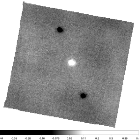
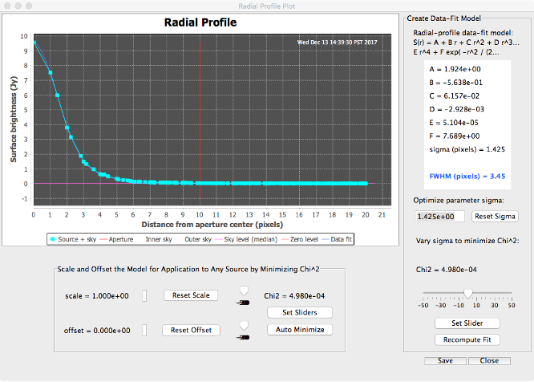
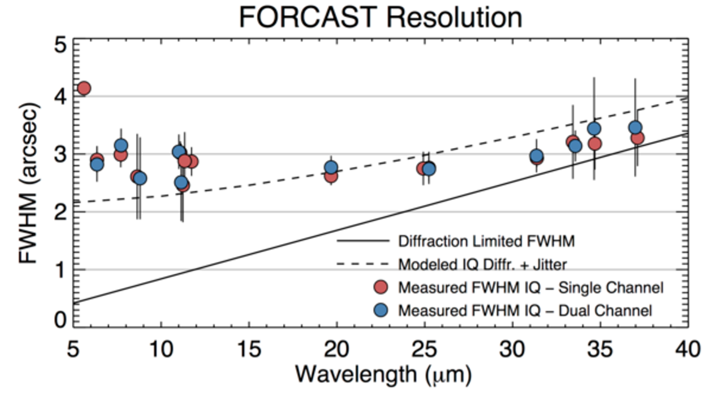

FORCAST photometry (detailed)
Aim: A more-detailed description of the photometry process.
Instrument: FORCAST
Documentation: FORCAST data handbook
Notebook repository: https://github.com/SOFIAObservatory/Recipes
Introduction
This cookbook describes the basic process for aperture photometry using Level 3 (flux calibrated) FORCAST images. The FORCAST observing modes are described in the SOFIA Observer’s Handbooks, available from the Proposing and Observing page on the SOFIA website; and the FORCAST data products are described in the FORCAST GO Data Handbook.
Raw FORCAST data suffers from numerous instrumental artifacts. Nearly all of the artifacts are removed or corrected by the Level 2 pipeline, including: bad pixels; Droop affect; non-linear pixel response; and the “jailbar” effect. The only known artifact that is not corrected is the variation in pixel-to-pixel response—i.e. the data are not “flat-fielded”. The artifact-corrected images are then flux calibrated using a set of calibration factors which are determined by comparison of standard star/asteroid observations to stellar and atmospheric models. Hence the flux calibration process corrects for telluric absorption across the given passbands. See the FORCAST GO Data Handbook for details regarding the pipeline algorithms and the flux-calibration process.
Level 3 FORCAST imaging data is written in FITS format as a 3-dimensional data cube with a single header (for detailed description, see FORCAST GO Data Handbook). The first plane of the data cube contains the pipeline-reduced and flux calibrated image in units of Jy/pixel; the second plane contains the variance image (Jy^2); and the third contains the exposure time per pixel (sec). The variance and exposure time images are used primarily to estimate measurement uncertainties.
Since FORCAST observations are taken by chopping and nodding on the sky, the final reduced data frame typically contains negative images of the source. (see Figure 1). In rare instances, when the chop and nod are sufficiently large to position the negative beam off of the array, only a positive image may be seen. In both cases, only the central positive source should be used for scientific analysis.
Figure 1. Level 3 pipeline processed image (NMC mode) for a bright source showing the typical, artifact corrected background. Only the central positive source should be used for scientific analysis; the other images are artifacts of the stacking and the specific merging procedure.
The uncertainties associated with each pixel from the raw data are propagated through the pipeline to produce the final variance image. The variance at each pixel is dominated by the Poisson noise due to the background and source emission. However, since there is no correction for pixel-to-pixel response variation (i.e. the data are not “flat-fielded”), the measured variance in pixel values in the final flux calibrated image will be much larger than the typical values from the variance image.
Since the flux calibrated data are in Jy/pixel, photometric measurements can be carried out directly on the images. There are three FORCAST FITS header keywords important to photometric measurements:
CALFCTR /Calibration Factor (Me/sec/Jy)
ERRCALF /Calibration Factor Uncertainty (Me/sec/Jy)
LAMREF /Reference wavelength (microns)
The reference wavelength (LAMREF) is simply the mean wavelength for the filter used. The CALFCTR is the filter-dependent factor derived from the flux calibration process carried out for each instrument flight series that converts count rate (Me -/s) to physical units (Jy), which is then applied to the individual observations to produce the flux-calibrated (LEVEL_3) images. In general, the CALFCTRs derived for each filter will change from flight series to flight series due to weather and changes to instrument configuration. ERRCALF is the uncertainty in the fitting process of the observed calibrators for each instrument run to appropriate stellar models and does not include uncertainty in the models themselves (see FORCAST GO Data Handbook for additional detail). This is the minimum 1-sigma uncertainty in the flux value at each pixel – the actual uncertainty is discussed further in Section 4.
Ingredients
Level 3 (flux-calibrated) FORCAST imaging data from the Infrared Science Archive (IRSA).
FORCAST GO Handbook for reference (latest version can be found on the SOFIA Data Products and Archives page)
Your favorite image analysis/photometry package that supports FITS. For example:
ATV for IDL (https://www.physics.uci.edu/~barth/atv/)
(OPTIONAL) Your favorite photometry package, e.g.:
IDL:Astro Library:DAOPHOT (https://idlastro.gsfc.nasa.gov/contents.html#C2)
AstroPy:photutils (http://photutils.readthedocs.io/en/stable/index.html)
[Note]: A basic run-through of these steps with python is shown in the FORCAST Basic photometry notebook. APT apparently does not work with all platforms/OS (e.g. Red Hat 7); please check system requirements carefully.
Inspecting the image
Level 3 pipeline data products from FORCAST marked with a DATAQUAL keyword as NOMINAL are ready for photometric analysis: no additional processing is required. Nonetheless, the user should inspect the image to make sure there are no issues that might have been missed during initial quality analysis. Issues discovered during quality analysis will be recorded as comments in the headers and can be seen as QAComments in the AOR. The background should be close to 0 and nearly flat across the image (see Figure 1 as an example), except for the 19 micron filter (F197) which often exhibits a “wavy” background at the few percent level. Very bright sources will sometimes have residual artifacts related to poor or incomplete Droop and “jailbar” correction; see the [FORCAST GO Data Handbook] for more information and examples.
The GO should also inspect the stellar profile. The stellar PSF is filter dependent and can show some ellipticity due to telescope jitter. This is seen more so at shorter wavelengths ≤10 μm than ≥20 μm. Typical FWHM values range from 2.5” at 11 μm to 3.5” at longer wavelengths. But note that the FWHM is variable depending on filter, aircraft altitude, and in-flight observing conditions (see Temi et al. (2014) for more detail on imaging performance). A sample radial profile fit generated with the IDL tool APT is presented in Figure 2. The pixel scale for FORCAST pipeline corrected images is 0.768”/pix (square).
Figure 2. Radial profile measurement using APT.
Aperture photometry
Procedure
Open the Level 3 FITS file in your image analysis tool, and select the first plane.
Check the image for any spurious artifacts or large non-astronomical background variations.
Check the photometry settings: in particular, some tools (e.g. ATV) give a choice to compute photometry in magnitudes or counts. For FORCAST you should choose counts; since the images are already flux calibrated (Jy/pixel), counts = Janskys.
Using a radial profile tool, measure the FWHM of a source in your field (which may or may not be the object of interest) and check to make sure that it is not too much larger than values expected for the given filter (see Figure 3).
Define your aperture and background annulus. The background annulus should be as large as possible without including other sources or large variations to ensure good statistics. We recommend using the same aperture and annulus as used for calibrators:
Aperture radius: 12 pixels
Background annulus: 15 – 25 pixels
Now compute photometry for the object of interest using the defined aperture and removing the background average. The final flux for the object (\(F_{o}\)) will be in Jy. Note the standard deviation (\(\sigma_{\rm B}\)) for the background in the annulus (you’ll need it for the uncertainty estimate below).
Estimating uncertainty
Relative uncertainty in the flux measurement (\(\eta\)) for the source can be estimated from the component relative errors, summed in quadrature:
\(\eta^2=(\eta_{\rm m})^2 + (\eta_{\textrm{flux}})^2 + (\eta_{\textrm{model}})^2\)
where \(\eta_{\rm m}\) is the relative error in the photometry measurement (\(\sigma_{\rm m} / F_{o}\)); \(\eta_{\textrm{flux}}\) is the relative error in the flux calibration; and \(\eta_{\textrm{model}}\) is the relative uncertainty in the flux calibration model at the given wavelength, which is typically 5% (Dehaes et al. 2011). The relative flux calibration error (\(\eta_{\textrm{flux}}\)) is simply ERRCALF/CALFCTR and can range from 1% – 10% depending on the filter used (typically higher for longer wavelengths).
The relative uncertainty in the photometry (\(\eta_{\rm m}\)) is dominated by sky photon noise and variations in pixel-to-pixel response, since the data are not “flat-fielded”. The most straightforward way to estimate the photometric uncertainty is simply is to use the standard deviation of the background. Note that this background is the residual background since the data are already sky-subtracted. The final measured source flux is given by:
\(F_{o} = \Sigma(F_{ij}-<B>))\) (over ij pixels within the aperture)
Where \(F_{ij}\) is simply the flux in the ij-th pixel and B is the expected value for the residual background (per pixel) in the annulus, usually taken to be median. Note that since the sky has already been subtracted, should be very close to 0. Hence the absolute uncertainty of the measurement will be:
\((\sigma_{\rm m})^2 = \Sigma[(\sigma_{ij})^2 + (\sigma_{\rm B})^2]\) (over - pixels within aperture)
where \(\sigma_{ij}\) and \(\sigma_{\rm B}\) are the standard deviations of the ij-th pixel in the aperture and the background, respectively. But if the uncertainty in each pixel is dominated by a combination of pixel-to-pixel response variation and Poisson noise from the sky, then
\(\sigma_{ij} \sim \sigma_{\rm B}\)
and
\((\sigma_{\rm m})^2 = 2 N_{\rm pix} (\sigma_{\rm B})^2 = 2 \pi {r_{ap}}^2 {\sigma_{\rm B}}^2\)
\(\sigma_{\rm m} =\) sqrt\((2 \pi) r_{\rm ap} \sigma_{\rm B}\) and \(\eta_{\rm m} = (\sigma_{m} / F_{o})\)
where \(r_{\rm ap}\) is the radius of the aperture in pixels. So the final relative uncertainty in the flux measurement would be:
\(\eta^2 = 2 \pi (r_{\rm ap} \sigma_{\rm B} / F_{o})^2 + (<{\rm ERRCALF}> / <{\rm CALFCTR}>)^2 + (0.0025)\)
For measured signal to noise \((F_{o}/\sigma_{\rm B})<<300\), the first term dominates the uncertainty. For low S/N measurements, it could be advantageous to use a small aperture to reduce the overall uncertainty in the measurement and apply an aperture correction to determine the actual flux. Successful application of an aperture correction requires a very accurate characterization of the instrumental PSF and assumes that the PSF is stable. However, as discussed below and in Su et al. (2017), the FORCAST PSF is highly variable. As a consequence, the uncertainty in the aperture correction will be significant and possibly even greater than the reduction in uncertainty gained by using the smaller aperture.
Color correction
A color correction can be applied to determine the true flux \(F_{\nu} (\lambda_{\rm ref})\) of the object (assuming either power-law or blackbody spectrum) at the filter reference wavelength \(\lambda_{\rm ref}\), from the FITS header, using the FORCAST Color Correction Tables
\(F_{\nu} (\lambda_{\rm ref}) = F_{o} (\lambda_{ref}) / K\)
Where \(F_{o}\) is the measured flux and K is the color correction for the given filter. Note that for many of the source spectrum model and filter combinations, the K-value is very small or negligible compared to the flux calibration fitting and model errors (Section 4).
FORCAST PSF Fitting
The measured image quality of SOFIA-FORCAST in-flight is limited by telescope jitter arising from vibrations of the telescope itself (e.g., due to wind loading in the cavity), turbulence (“seeing”), and tracking accuracy. Figure 4 shows a sample of FWHM measurements derived from observations of stellar calibrators compared to the theoretical diffraction limit calculated for a 2.5 m primary with a 14% central obstruction combined with the FWHM telescope jitter, here assumed to be 2.08 arcsec (1.25 arcsec rms).
Figure 3: Representative FWHM Image Quality for the FORCAST camera in select filters as measured during Cycle 4. Also shown are the diffraction limited FWHM (solid line; calculated for a 2.5-m primary with a 14% central obstruction) and the modeled IQ (dashed line), which includes shear layer seeing and 1.25’’ RMS telescope jitter.
Due to the nature of a flying observatory, the SOFIA-FORCAST PSF is relatively unstable from flight-to-flight and even among observations on a single flight. Detailed analysis by Su et al. (2017) indicates that the FWHM can vary by as much as 6 to 8% from observation to observation. The inner portion of the PSF can be fit using a slightly elongated 2-D Moffat profile. The outer wings of the profile, however, deviate significantly from a Moffat function and must be modeled with a more sophisticated profile or empirically using high S/N observations of standard stars (e.g. Su et al. 2017). Results of Su et al. (2017) suggest that careful PSF modeling must be done to accurately measure excess emission within 10 arcsec of the target.
Crowded fields and background emission
When a source is in a crowded field or is embedded on a background of extended emission, it is common to determine the photometry using an aperture correction method. As discussed above, aperture correction is not recommended for FORCAST photometry due to the variable PSF. Instead, direct PSF fitting is required to address crowded sources. A 2-D Moffat profile can be used for an initial estimate, but a more sophisticated empirical model must be used to obtain the most accurate results (see previous section). Uncertainty in the flux measurement will depend on the noise in the background as well as the uncertainty in the PSF fit.
In practice, however, it is rare for there to be a crowded field in the mid-IR that might necessitate the use of an aperture correction. What is more likely is that there may be point sources on a complex IR background due to nebular emission. In this case, instead of applying an aperture correction a better method is to model and remove the background before performing aperture photometry on the source.
References
Dehaes, S. et al. 2011, A&A, 533, 107.
Temi, P. et al. 2014, ApJS, 212, 24.
Su, K. et al. 2017, AJ, 153, 226.